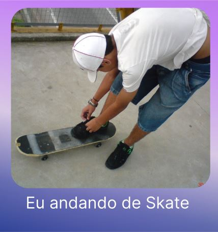
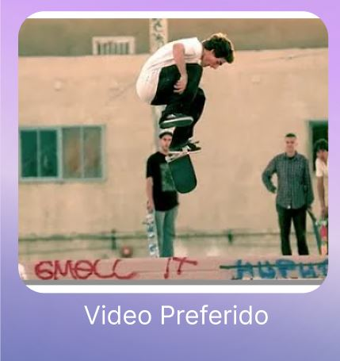

hobies e Interesses
Viajar
Adoro conhecer lugares novos e sempre que posso vou viajar, abaixoalguns lugares que ja vizitei.


Esqueitista
Apesar de não andar a algum tempo, este é o único esporte que pratico ou praticava.
Sempre que posso ou que tenho tempo, estou jogando algo ou assistindo alguma coisa, que tem o skate como referencia.

